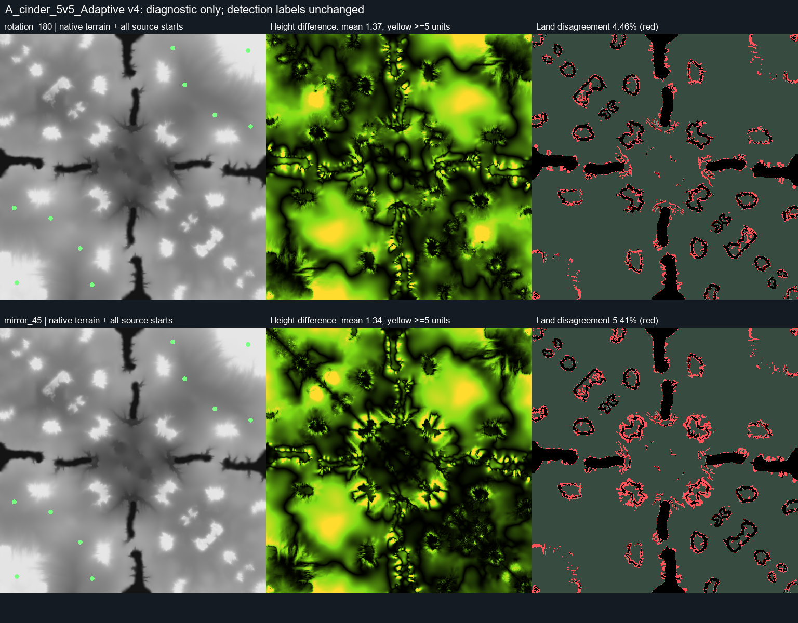

26 October 2026. Exact source: 5869_9372,
a_cinder_5v5_adaptive.v0004, current curated validation split. This is the earlier
single-map diagnostic. The subsequent anchor-assisted v2 implementation
now supports its approximate source/default layout. Existing labels, tensors, splits and detector tolerances
are preserved; no training or collection-wide relabeling was run.
The owner's visual assessment is that the gameplay layout is symmetric while intentional terrain variation adds visual interest. Measurements support an approximate half-turn plus two diagonal mirror axes candidate. They do not prove identical gameplay, route widths, travel times or engine navigation.
Coordinates are physical game world units. Comparisons use all 263,169 native height vertices, not preview colors. Cell masks use their distinct half-cell coordinate convention. Fixed transforms are centered at (256,256), with mirrors at 45 and 135 degrees. Errors do not include a fitted vertical translation.
| Measurement | 180-degree rotation | 45-degree mirror | 135-degree mirror |
|---|---|---|---|
| Mean absolute height difference | 1.368 | 1.344 | 0.990 |
| Median absolute height difference | 0.992 | 0.906 | 0.680 |
| 95th percentile height difference | 3.898 | 3.953 | 2.992 |
| Maximum height difference | 13.156 | 12.773 | 13.563 |
| Saved land-mask agreement | 95.538% | 94.585% | 95.016% |
| Saved hover-mask agreement | 95.332% | 94.410% | 94.880% |
| Wet/dry agreement | 99.796% | 99.799% | 99.850% |
Full height range is 27.891–67.500, or 39.609 units. Robust 5th–95th percentile relief is 18.278 units. Half-turn height differences exceed 5 units at 2.351% of vertices; they exceed 10 units at 0.084%. Thus differences are mostly modest, but they are not confined to a few changed pixels.
Of the 11,698 cells where the land mask disagrees under the half-turn, 87.65% are within two native cells of an original passability edge and 96.44% within four. This is consistent with small shifts in cliff/hill boundaries. It does not establish that every shifted edge is tactically irrelevant.
Using four-neighbor connected components of the saved static land masks, every one of the ten source starts reaches the same 90 out of 92 active mexes before and after all three candidate transforms. There are zero changed spawn-to-mex reachability observations. No snapping of source points is used. This checks endpoint connectivity, not route length/width, unit clearance or the engine.
Gaussian smoothing does not eliminate the mismatch: half-turn height MAE falls from 1.368 to 1.286 at sigma=4 cells and 1.077 at sigma=16 cells. Do not assume all artistic asymmetry is small high-frequency noise that can simply be blurred.
Matching uses one-to-one minimum-total-distance assignment separately for starts, mexes and hydros. This prevents multiple transformed points reusing one target. All source markers and the pinned active configuration are checked separately.
| Half-turn evidence | Result |
|---|---|
| All ten source starts | Mean displacement 2.013; maximum 2.828 units |
| All 124 source mexes | 104 exactly matching within numerical precision; mean displacement 0.368; maximum 3.162 |
| 92 active mexes | 76 exactly matching; mean displacement 0.452; maximum 3.162 |
| Four active hydros | Maximum displacement 2.236 units |
At a 4-world-unit anchor tolerance, every start, source mex, active mex and hydro matches under the half-turn. This is a diagnostic tolerance illustration, not an adopted global rule. Under each diagonal mirror, all 124 source mexes and all 92 active mexes match within 3 units. All ten starts also match within 3 units (allowing floating-point rounding at the boundary).
Wrong candidates are well separated: under a 90-degree rotation or a horizontal mirror, no start or mex matches within 3 units. Mean start displacement is about 231 units, versus 1.46–2.01 for the diagonal mirrors/half-turn.
The 45-degree mirror and half-turn exchange the recorded 1v1 bases; the 135-degree mirror approximately fixes them individually. Therefore choosing only the lowest-height-error mirror would lose important scenario information.
The detector already allows height differences; it is not an exact pixel test. Its feature-weighted height RMSE is normalized by robust relief, with an acceptance limit of 0.055. For the fixed half-turn the score is 0.10139; the frozen fitted half-turn is 0.10133. The p95 normalized error is 0.21132 versus a limit of 0.12. Even the best fitted diagonal mirror has RMSE 0.08242, above the limit. Fitting center/angle makes little difference.
The score is not a percentage of mismatched pixels or a confidence probability. The geometry is approximately symmetric; the current height-only acceptance gate is too restrictive for the desired gameplay-layout interpretation here.

Machine-readable report, diagnostic tool and coordinate/matching tests.
Reproduce with PYTHONPATH=src and .venv-codex/Scripts/python.exe:
tools/inspect_symmetry_mismatch.py --key 5869_9372 --out data/processed/symmetry_cinder_diagnostic_v1.